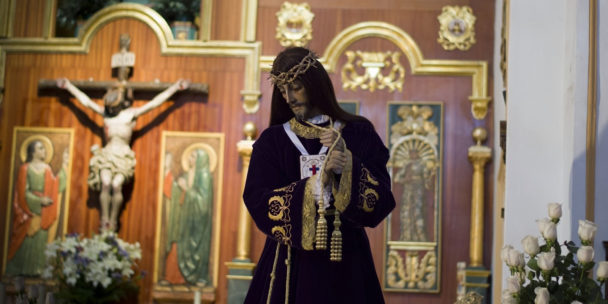
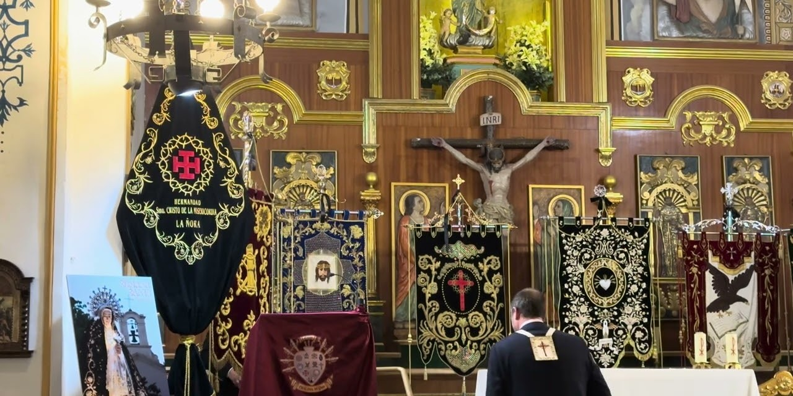
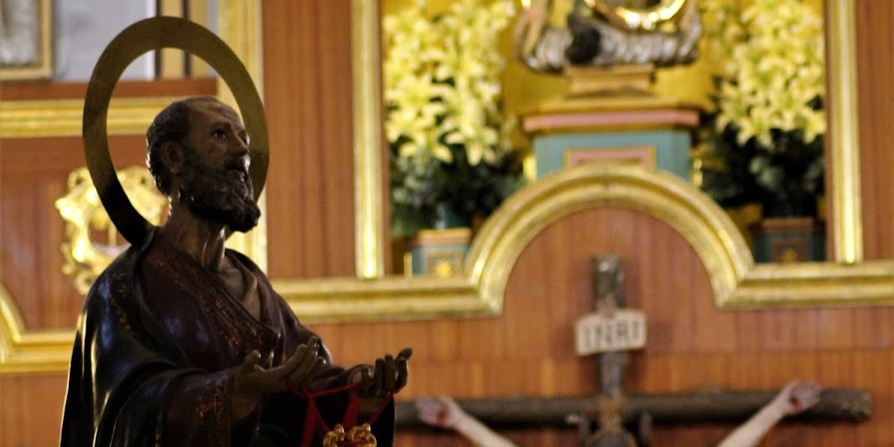
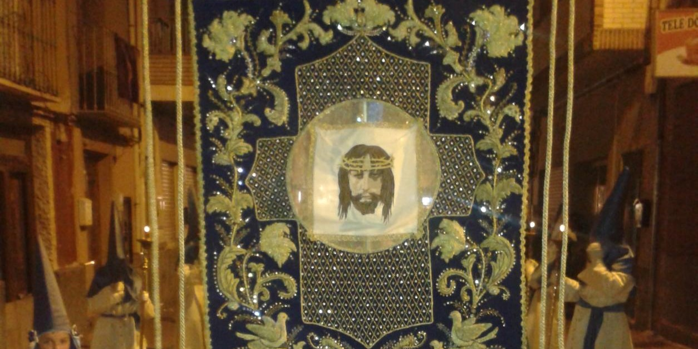
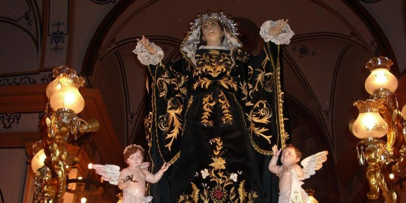
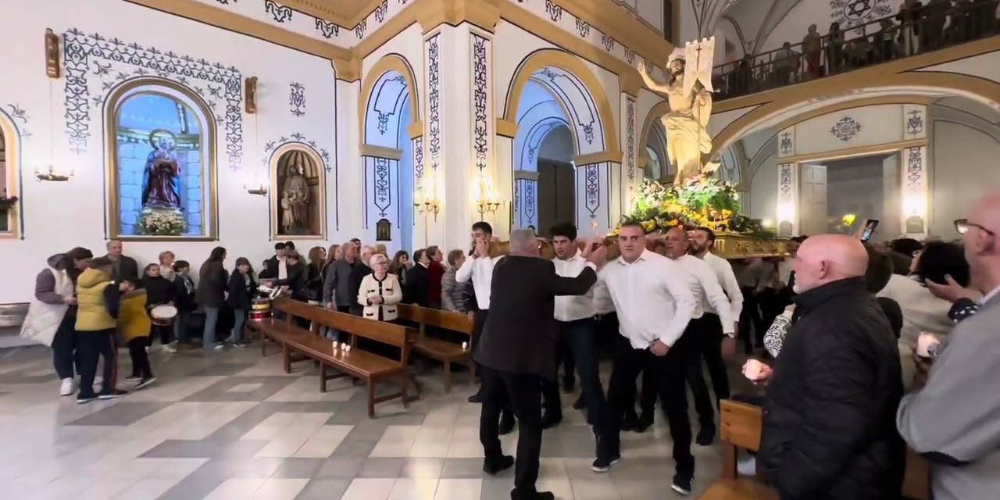
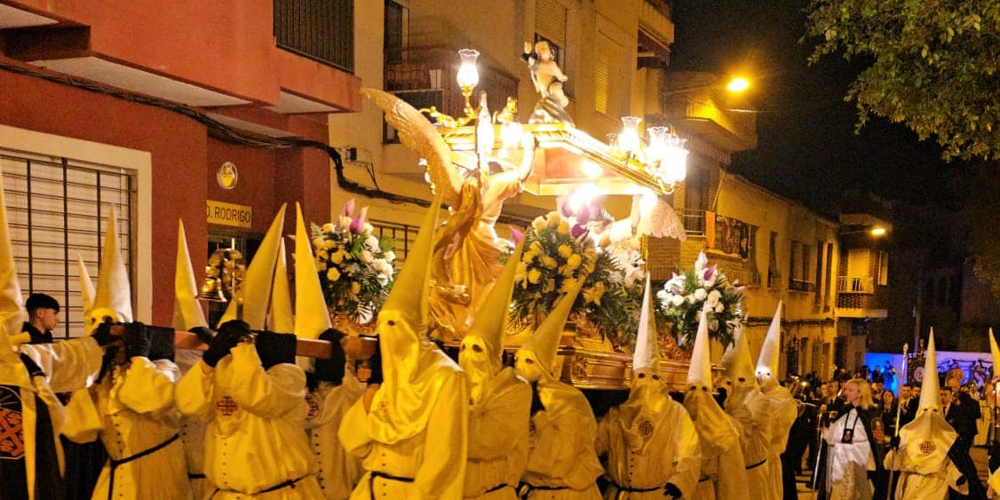
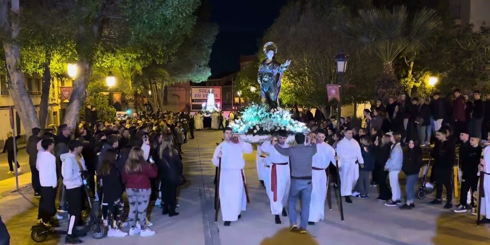
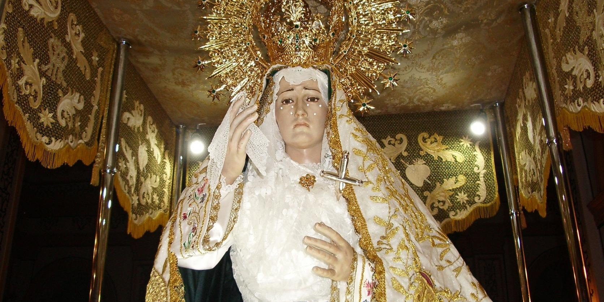
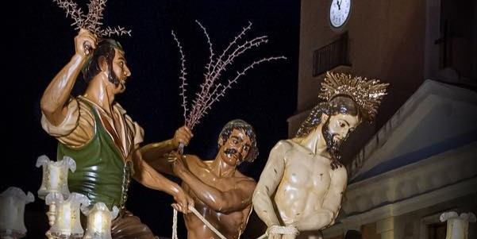

Hermandad de Ntra. Sra. del Paso

Hermandad de Ntro. Padre Jesús Nazareno

Hermandad del Santísimo Cristo del Silencio

Hermandad de San Pedro

Hermandad de la Santa Mujer Verónica

Hermandad del Santísimo Cristo de la Misericordia

Hermandad de Cristo Resucitado

Hermandad del Santo Sepulcro

Hermandad de San Juan

Hermandad de la Virgen de la Esperanza

Hermandad de La Flagelación